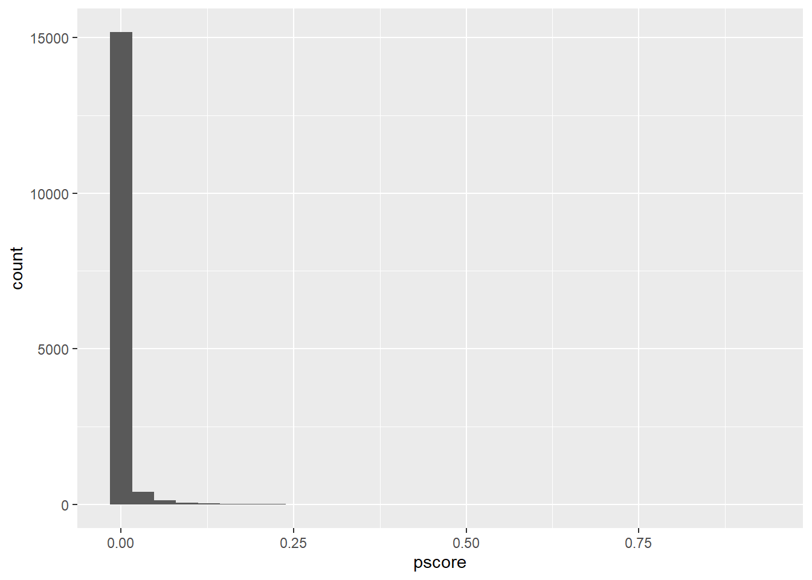
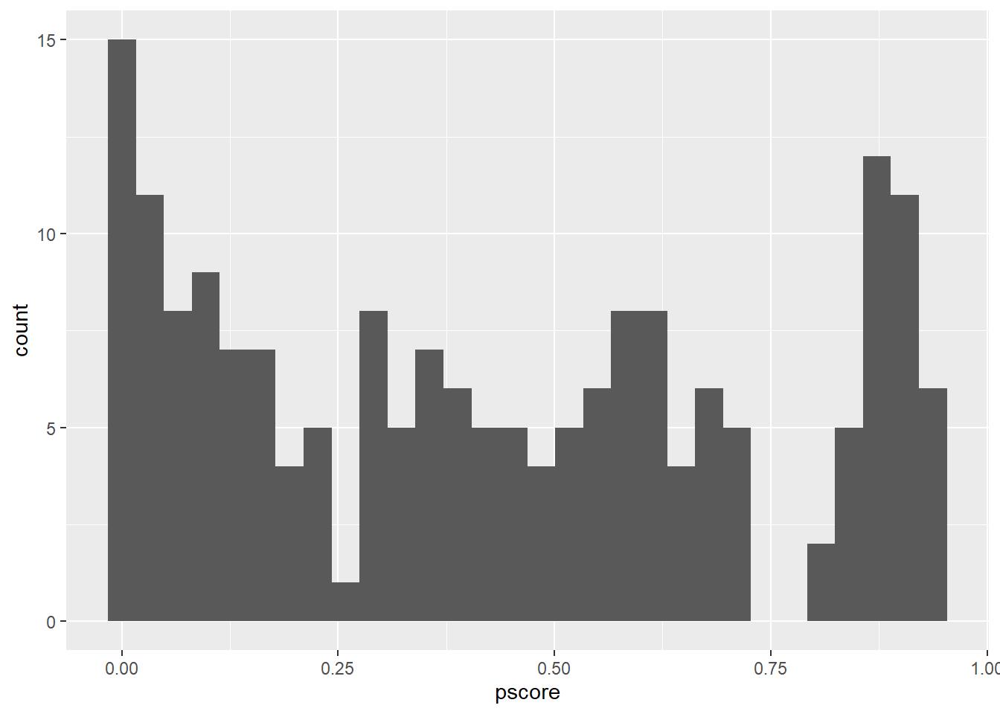

Tarea 1 - Ciencias Sociales Computacionales
Jaquelin M. Morillo Remesnitzky
2022-11-30
1. Resumen propensity score matching
https://mixtape.scunning.com/05-matching_and_subclassification#propensity-score-methods
Github: https://github.com/JaquelinMorillo/ComputationalSC/tree/main/Tarea%201
Uno de los problemas mas frecuentes que se presentan al inferir
causalidad es el camino de la puerta trasera causado por factores de
confusion. Si cuento con, al menos, tres variables aleatorias \(X\),\(D\),
e \(Y\). Segun el DAG que se presenta a
continuación, hay un camino directo desde \(D\) hasta \(Y\) , que representa un efecto causal. No
obstante, también hay un segundo camino desde \(D\) hasta \(Y\) mediado por \(X\) llamado camino de puerta trasera.
Mientras que el camino directo es un efecto causal, el camino trasero no
implica causalidad. Más bien, es un proceso que crea correlaciones
espurias entre \(D\) e \(Y\) que son impulsadas únicamente por las
fluctuaciones de la variable aleatoria \(X\).

Con el fin de solventar este problema existen diferentes estrategias de
condicionamiento, sin embargo, una de las más populares es el
Propensity Score Matching (PSM) desarrollado
por Donald Rubin (1977). Este mecanismo es más utilizado por algunas
disciplinas que otras; por ejemplo en el área de la salud que es más
frecuente que en el campo de las ciencias sociales, principalmente
porque los economistas suelen ser escépticos en cuanto a la posibilidad
de cumplir con la hipótesis de independencia
condicional (CIA, por sus siglas en inglés) en cualquier
conjunto de datos. La CIA, implica que la aleatorización se produzca
sólo condicionada por algunas características observables (Krueger,
1999). Aún así, la estrategia de identificación debe ser coherente con
el diseño teórico y metodológico y el propósoto de la
investigación.
El PSM, es una de las estrategias de identificación que nos permite
lidiar con el camino de la puerta trasera. Para ello, toma las
covariables necesarias, estima un modelo de máxima verosimilitud de la
probabilidad condicional del tratamiento (normalmente un logit o probit
para asegurar que los valores ajustados están limitados entre 0 y 1), y
utiliza los valores predichos de esa estimación para colapsar esas
covariables en un único escalar llamado Propensity
Score (PS). Todas las comparaciones entre el grupo de
tratamiento y el de control se basan entonces en ese valor.
La idea del PSM es comparar unidades que, basándose en los observables,
tenían probabilidades muy similares de ser colocadas en el grupo de
tratamiento, aunque esas unidades difieran con respecto a la asignación
real del tratamiento. Si, condicionado a \(X\), dos unidades tienen la misma
probabilidad de ser tratadas, entonces decimos que tienen puntuaciones
de propensión similares, y toda la variación restante en la asignación
del tratamiento se debe al azar. Y en la medida en que las dos unidades
A y B tienen la misma puntuación de propensión de 0,6, pero una es el
grupo de tratamiento y la otra no, y el supuesto de independencia
condicional se mantiene de forma creíble en los datos, entonces las
diferencias entre sus resultados observados son atribuibles al
tratamiento.
Uno de los elementos a considerar es el Common Support (CS), es
decir, que la probabilidad de tratamiento estén entre 0 y 1 para cada
estrato de interés. En este sentido, el CS requiere que haya unidades en
el grupo de tratamiento y de control en la puntuación de (PS). La
puntuación de propensión puede utilizarse para comprobar el equilibrio
de las covariables entre el grupo de tratamiento y el grupo de control,
de forma que los dos grupos sean equivalentes desde el punto de vista de
la observación.
2. Replicación Ejemplo: The NSW job training program
El programa de formación laboral National Supported Work Demonstration
(NSW) era un programa de empleo temporal diseñado para ayudar a los
trabajadores desfavorecidos que carecían de habilidades laborales
básicas a entrar en el mercado laboral, dándoles experiencia laboral y
asesoramiento en un entorno protegido. El grupo de tratamiento recibió
todos los beneficios del programa NSW, por su parte al grupo de control
no se le proporcionó ningún tipo de instrucción o apoyo. Posteriormente,
se recopiló información demográfica y de ingresos tanto del grupo de
tratamiento como del grupo de control en la línea de base, así como cada
nueve meses a partir de entonces. El NSW era un programa de formación
laboral aleatorio; por lo tanto, se cumplía el supuesto de
independencia. Por lo tanto, el cálculo de los efectos medios del
tratamiento fue el estimador de la diferencia de medias.
Una vez concluido el programa, los ingresos reales de los participantes
del grupo de tratamiento después de participar del NSW fueron superiores
a los ingresos del grupo de control entre 900 dólares (Lalonde 1986) a
1.800 dólares (Dehejia y Wahba 2002) aproximadamente. Sin embargo, estos
resultados fueron erroneos a causa del sesgo de selección:
\[E\left [Y^{1}\mid D=1\right] \neq E\left [Y^{1}\mid D=0\right]\qquad (Sesgo\quad de\quad selección)\]
\[E\left [Y^{1}\mid D=1\right] \neq E\left [Y^{1}\mid D=0\right]\qquad (Sesgo\quad de\quad selección)\]
La violación de la independencia también implica que las covariables
estarán desequilibradas en el PS, perdiendo la propiedad de
equilibrio.Entre los participantes del NWS hay más
afroamericanos, más hispanos, más jóvenes, tienen menos probabilidades
de estar casados, más probabilidades de no tener un título y menos
estudios, más probabilidades de estar desempleados y más probabilidades
de tener ingresos considerablemente inferiores cuando partió el
programa. En resumen, los dos grupos no son intercambiables en cuanto a
los observables.
Por su parte, y luuego de los erráticos intentos de Lalonde (1986),
Dehejia y Wahba (1999) fueron pioneros en analizar este proceso social
utilizando el PMS. En primer lugar, los autores estimaron el propensity
score utilizando un modelo de máxima verosimilitud. Una vez que tuvieron
la puntuación de propensión estimada, compararon las unidades de
tratamiento con las de control dentro de los intervalos del propensity
score. Este proceso de comprobar si hay unidades tanto en el tratamiento
como en el control para los intervalos del propensity score se denomina
comprobación del common support. Con el PS estimado calculado, Dehejia y
Wahba (1999) estimaron el efecto del tratamiento en los ingresos reales
de 1978 utilizando el grupo de tratamiento experimental en comparación
con el grupo de control no experimental y concluyeron el programa NSW
hizo que los ingresos aumentaran entre 1.672 y 1.794 dólares,
dependiendo de si se incluyeron covariables exógenas en las regresiones
obteniendo estimaciones muy significativas estadísticamente.
A continuación se calculó el efecto medio del tratamiento a partir del
experimento real. Utilizando el código provisto en el ejemplo, se
obtiene que el programa de formación laboral de NSW hizo que los
ingresos reales en 1978 aumentaran en, aproximadamente 1974 dólares.
Acto seguido, en lugar de utilizar el grupo de control experimental del
experimento aleatorio original, el script provisto en el texto sugiere
considerar el grupo de control no experimental a partir de los datos de
la Current Population Survey. Es muy importante destacar que, mientras
que el grupo de tratamiento es un grupo experimental, el grupo de
control consiste ahora en una muestra aleatoria de estadounidenses de
ese periodo de tiempo. Por lo tanto, el grupo de control sufre un sesgo
de selección extremo, ya que la mayoría de los estadounidenses no
funcionarían como contrafactuales para el grupo de trabajadores que se
seleccionó en el programa NSW.

En este sentido, se obtiene que el PS del grupo de control es de 0.0066
mientras que el PS del grupo de tratamiento es de 0.4253. El propensity
score son los valores ajustados del modelo logit. Es decir, se
utilizaron los coeficientes estimados de esa regresión logit para
estimar la probabilidad condicional de tratamiento, asumiendo que las
probabilidades se basan en la distribución logística acumulativa:
\[Pr(D=1\mid X)= F (\beta + \gamma Tratamiento + \alpha X)\]
Donde \(F () = \frac{exp(z)}{1+
exp(z)}\) es la función de distribución acumulativa logística
estándar y \(X\) son las covariables
exógenas que se incluyen en el modelo.
El PS utiliza los valores ajustados de la regresión de máxima
verosimilitud para calcular la probabilidad condicional de tratamiento
de cada unidad, independientemente del estado de tratamiento real. El PS
no es más que la probabilidad condicional de tratamiento previstO o el
valor ajustado para cada unidad. Es aconsejable utilizar la máxima
verosimilitud al estimar la puntuación de propensión para que los
valores ajustados estén en el rango [0,1].
Como se explicó anteriormente, para estimar un efecto causal cuando hay
un factor de confusión, es necesario que (1) la CIA y (2) la
probabilidad de tratamiento estén entre 0 y 1 para cada estrato:
\[(1) \quad E\left [Y^{1}\mid D=1,X\right] =E\left [Y^{1}\mid D=0, X\right]\qquad (Independencia\quad condicional)\]
\[(2)\quad 0< Pr(D=1\mid X)<
1\qquad (Common\quad support)\]
El common support es necesario para calcular cualquier tipo de efecto de
tratamiento medio definido, y sin él, sólo se obtendrá un average
treatment effect “extraño” sólo para aquellas regiones que tienen common
support. La razón por la que es “extraño” es que el efecto medio del
tratamiento (ATT ) no se corresponde con ninguno de los efectos de
tratamiento interesantes que se necesitaban al evaluar el programa. La
lección es que, si los dos grupos son significativamente diferentes en
cuanto a las características de fondo, las puntuaciones de propensión
tendrán distribuciones muy diferentes según el estado de tratamiento.
Como conclusión, condicionada a la puntuación de propensión, la
distribución de las covariables debe ser la misma para las unidades del
tratamiento que para las del grupo de control.

Es evidente que existen dos caminos entre X y D. Está el camino directo
de X a D, y está el camino de la puerta trasera. El camino de la puerta
trasera está bloqueado por un colisionador, por lo que no hay
correlación sistemática entre X y D a través de él. Pero hay una
correlación sistemática entre X y D a través del primer camino dirigido.
En resumen, el Teorema del propensity score implica covariables
observables balanceadas.
2.1. Ponderación del Propensity Score
Hay varias formas en que los investigadores pueden estimar los efectos
medios del tratamiento utilizando el PS estimado. Asumienod que nuestras
datos cumplen con la CIA, una forma de estimar los efectos del
tratamiento es utilizar un procedimiento de Weighting
Propensity Score (WPS) en el que el PS de cada individuo
es una ponderación del resultado de ese individuo (Imbens 2000). Cuando
se agrega, esto tiene el potencial de identificar algún efecto medio del
tratamiento.
Existen diferentes opciones para estimar la varianza de este estimador,
pero una de ellas es utilizar el bootstraping (procedimiento utilizado
para estimar la varianza de un estimador). Hirano e Imbens (2001)
proponen un estimador de ponderación de probabilidad inversa del efecto
medio del tratamiento que asigna pesos normalizados por la suma de las
puntuaciones de propensión para los grupos tratados y de control, en
lugar de pesos iguales de \(\frac{1}{N}\) para cada observación. Sus
ponderaciones suman uno dentro de cada grupo, lo que tiende a hacerlo
más estable.
Estimando el efecto del tratamiento mediante la ponderación
probabilística inversa utilizando el procedimiento de ponderación no
normalizado descrito anteriormente, encontramos un ATT estimado de 11876
dólares. Utilizando la normalización de las ponderaciones, se obtiene
7238 dólares promedio. De esta forma, se estan ponderando las unidades
de tratamiento y control según \(\widehat{p}(X)\) lo que hace que las
unidades con valores muy pequeños de la puntuación de propensión se
disparen y sean inusualmente influyentes en el cálculo del ATT. Por lo
tanto, una opción para lidiar con este problema es recortar los datos.
En este caso, se realizó un recorte para eliminar la masa de valores en
la cola de la izquierda y, manteniendo sólo los valores cuyos PS están
entre 0,1 y 0,9, se obtiene un promedio de 2006 dólares utilizando los
pesos no normalizados y 1806 dólares utilizando los pesos normalizados.
Estos valores son muy similares a lo que sabemos que es el verdadero
efecto causal utilizando los datos experimentales (1794 dólares).
Finalmente, se evidencia que las ponderaciones normalizadas están aún
más cerca de los valores experimentales.
3. Referencias
Krueger, Alan. 1999. “Experimental Estimates of Education Production
Functions.” Quarterly Journal of Economics 114 (2): 497–532.
Rubin, Donald B. 1977. “Assignment to Treatment Group on the Basis of a
Covariate.” Journal of Educational Statistics 2: 1–26.
Lalonde, Robert. 1986. “Evaluating the Econometric Evaluations of
Training Programs with Experimental Data.” American Economic Review 76
(4): 604–20.
Dehejia, Rajeev H., and Sadek Wahba. 1999. “Causal Effects in
Nonexperimental Studies: Reevaluating the Evaluation of Training
Programs.” Journal of the American Statistical Association 94 (448):
1053–62.
Dehejia, Rajeev H., and Sadek Wahba.2002. “Propensity Score-Matching
Methods for Nonexperimental Causal Studies.” Review of Economics and
Statistics 84 (1): 151–61.
Imbens, Guido W. 2000. “The Role of the Propensity Score in Estimating
Dose-Response Functions.” Biometrika 87 (3): 706–10.
Hirano, Keisuke, and Guido W. Imbens. 2001. “Estimation of Causal
Effects Using Propensity Score Weighting: An Application to Data on
Right Heart Catheterization.” Health Services and Outcomes Research
Methodology 2: 259–78.